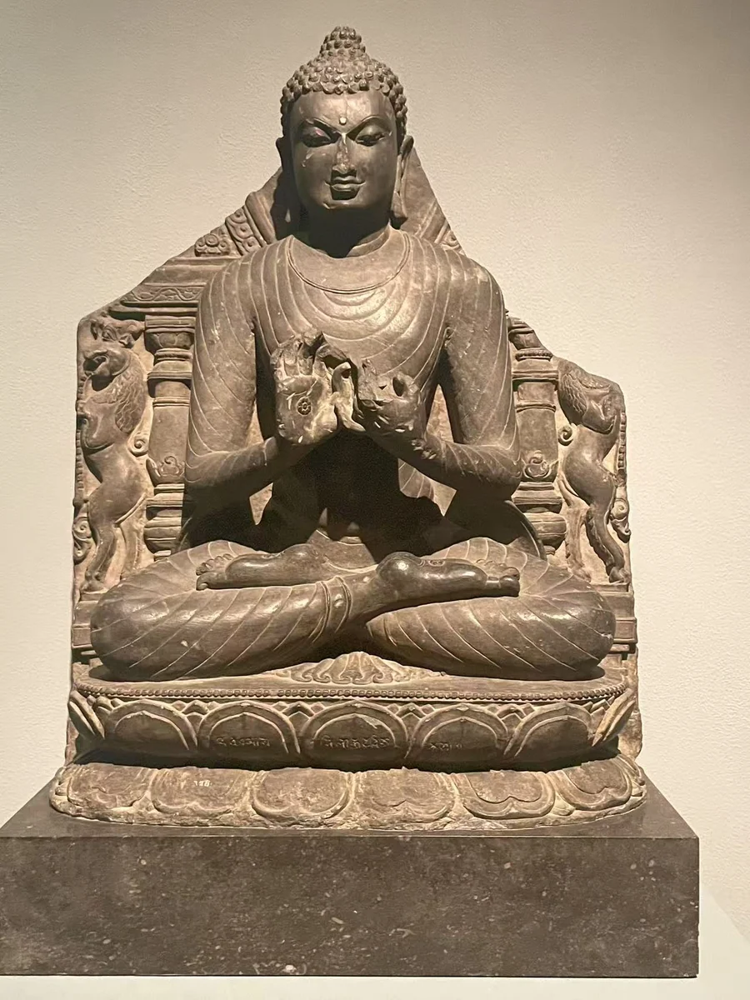

05 / CLOSE LOOKING
石匠 Vijaka 的署名

佛在鹿野苑初转法轮，是这件石像表现的故事。馆方将它的制作地域归为比哈尔，可能是那烂陀。佛的双手抬到胸前，衣缘与莲座保持清楚的线条；底座铭文还留下石匠Vijaka的名字。在礼拜的形象之外，这段文字也让制作它的人被记住。 [03]
细看：胸前说法的手势；底座铭文的位置；佛与背屏之间的空间。
资料与来源
作品基本资料据现场展签及下列馆方记录整理；文字中的观看描述基于这里的现场照片。
05 / CLOSE LOOKING

佛在鹿野苑初转法轮，是这件石像表现的故事。馆方将它的制作地域归为比哈尔，可能是那烂陀。佛的双手抬到胸前，衣缘与莲座保持清楚的线条；底座铭文还留下石匠Vijaka的名字。在礼拜的形象之外，这段文字也让制作它的人被记住。 [03]
细看：胸前说法的手势；底座铭文的位置；佛与背屏之间的空间。
作品基本资料据现场展签及下列馆方记录整理；文字中的观看描述基于这里的现场照片。